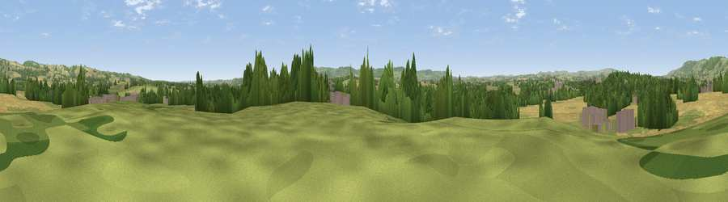

Viewpoint near Norton Fitzwarren
#24147 in England · top 55% of its area beats it · near Norton FitzwarrenThe view, rendered

A 360° render of this exact spot computed from the terrain model, tree cover and land cover — summer colours, afternoon light, calibrated against photographs of famous viewpoints. Real trees, hedges and buildings will differ in detail.
The panorama
Grey silhouette: terrain skyline in each direction (720 bearings, Earth curvature and refraction included). Dashed green: skyline with trees (+15 m) and buildings (+8 m) as obstacles. Blue strip: how far the ground is visible on each bearing.
Where the view opens
Wedge length = distance to the farthest visible ground on that bearing (vegetation-aware). Rings at 10, 25 and 50 km.
What fills the view
38% grassland · 33% cropland · 21% woodland · 7% built-up
Angular shares of the visible panorama (visual magnitude), not map area. Landscape diversity 0.54 (0–1 Shannon).
Key numbers
More beautiful places nearby
The staircase of upgrades: each row has a higher view potential than everything closer. Driving times are estimates from straight-line distance, calibrated against real road routing — check an actual route before setting out.
| Place | Direction | Drive | Score |
|---|---|---|---|
| Viewpoint near Norton Fitzwarren | WNW · 1 km | ~3 min | 55.5 |
| Viewpoint near Kingston St Mary | NE · 5 km | ~10 min | 60.4 |
| Kingston Beacon | NE · 5 km | ~11 min | 74.0 |
| Viewpoint near Broomfield | N · 6 km | ~12 min | 78.5 |
| Cothelstone Hill | N · 6 km | ~13 min | 82.1 |
| Viewpoint near West Bagborough | NNW · 8 km | ~16 min | 84.3 |
| Wills Neck | NNW · 9 km | ~18 min | 85.7 |
| Viewpoint near Holford | NNW · 15 km | ~27 min | 85.9 |
51.03064, -3.14826 · source: screening · position refined by local search. Computed location — check access rights before visiting.